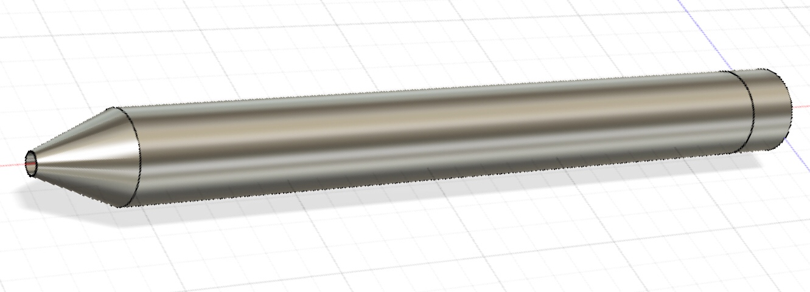
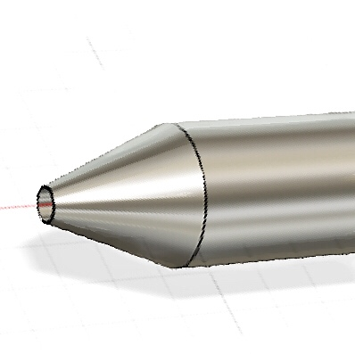
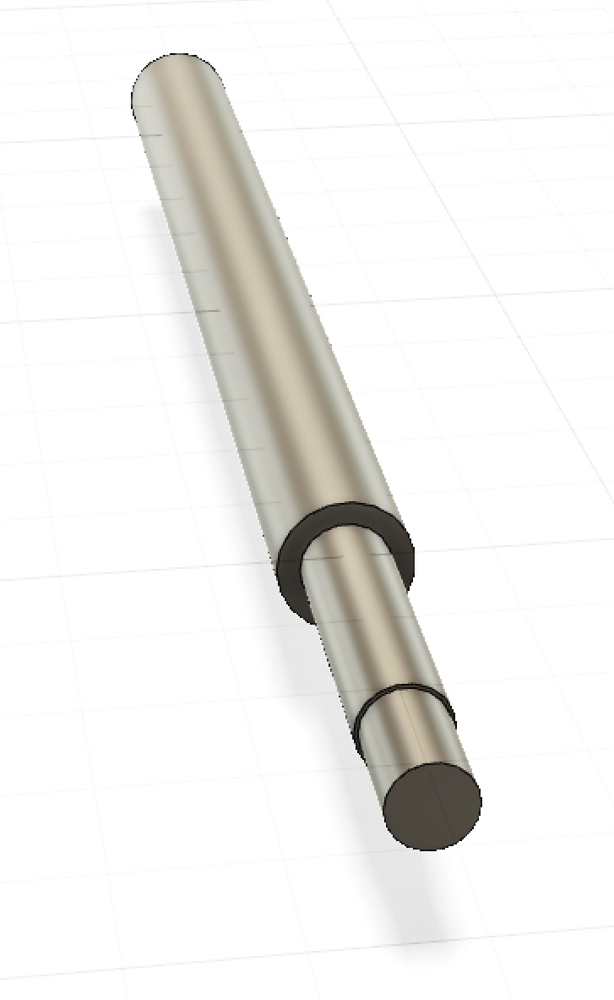
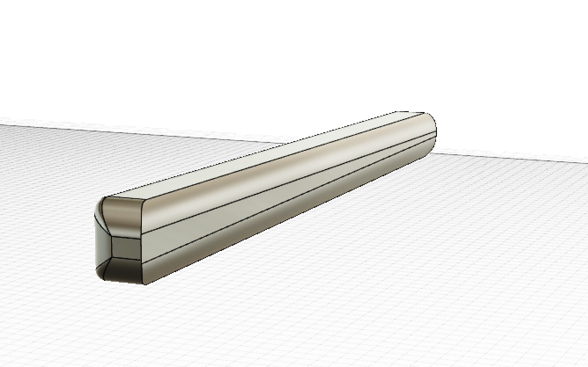
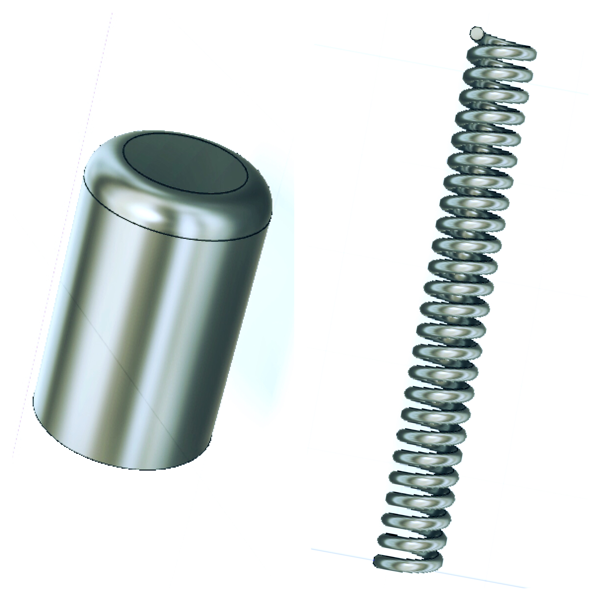

３D CAD ソフトを使い、身近にある簡易的な製品を設計してみよう。 ・計測機を使って対象の寸法を測る。 ・対象を分解・観察・調査するなどして情報を集める ・Fusion360を使い対象の３Dモデリングを行う。
「クリックボタン」「フック」「ホルダー」「インクカートリッジ」「ペン先」「バネ」「外装フォルム」
様々なものの厚みや長さを100分の1mm単位まで正確に測る事ができる。 計測した値が大きな液晶に表示されるので、数字が見やすく、読み間違いなども起こりにくい。 ボタン操作で、数値のリセットやON・OFFの切り替えをおこなう。
ものが円柱や円錐形だったため、定規での測定では正確な数値を測れなかったと思う。 その点、デジタルノギスによる測定では、本尺のジョウとスライダーのジョウの間に挟むだけで、測定面から２つの間の距離を測定してくれるので、測定が容易だった。 単純な構造だと思っていたボールペンからこれほど多くの寸法が出てきたのには驚いたし、ここに記載のある寸法の数値も全体の何割かに過ぎない。 また、ボールペンは複数の部品に分ける事ができ、単色のボールペンではあるものの、全てを図面に書き起こすことはできなかった。
かなり高性能な3DCADソフト。 学生は４年間無料でライセンスの取得ができる。 コンセプトデザイン、製品設計、ビジュアライゼーション、シミュレーション、CAMなど、デザインから製造までの工程を全ておこなう事ができ、それらの工程を全てクラウド上で管理・共有できる。
胴軸の制作にあたってスケッチメニューの「線分」か「長方形」で長方形を作り「作成」メニューから「回転」か、「押し出し」を選択し、 測定した寸法をもとにサイズの調整をおこなう。（円柱はスケッチなしで直接「作成」から作れる。）ボディは完全な円柱でできており、勾配や凹凸などはないが、内部が空洞になっている 部分があるため、穴（円柱形の空洞）を作成ツールから作る。 ペンのノックバー付近は別の素材でできており若干の凹凸もあったため、ボディとは別に円柱を作成・編集メニューから結合を選択し １つにつなげる。

口金の制作は、まず長さ分の大きさを円柱で作り、作成ツールで「ロフト」を選択、効果を適応させたい面を選び、計測した寸法に応じて、勾配角度を決める。 また、ペン先が出るように、ロフトした面の先端に穴を開ける。 その後、ボディと結合。

インクカートリッジは円柱が３つ順に重なったような構造なため、寸法に合わせ、大きさ順に円柱を前に作った円柱の 上面に新規で重ねながら制作していった。 スケッチから最初に、平面の制作を行いそこから回転させて立体化した方が効率的だったかもしれない。

クリップは細部に至るまでのディテールが計測できない複雑な構造だった。 曲線や凹凸も多く、単純な形として起こすのは不可能であったため、正方形を立体にし、そこから不要な部分を切り取るように「面取り」や 「フィレット」「勾配」などを編集ツールで使いディテールを再現していった。 やはり、完璧な再現が難しく、微調整をまだうまく効かすことができなかったので、クリップの裏面の制作は断念した。

ノックバーは円柱を作った後、上面の端を丸く削って作った。 スプリングはボールペンの押し出したり、中に戻したりの動作を行いやすくするバネだが、CAD上に「バネ作成の機能」が存在したため、 そこで作成をおこなった。 バネの大きさ、直径は勿論バネの巻き数まで数え、データーに反映させることができた。
